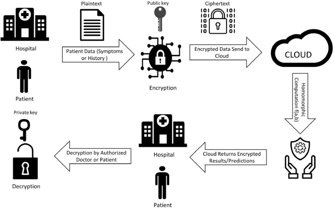

4 Privacy and Security in the Age of AI
Introduction to AI Privacy and Security Concerns
The integration of AI into various aspects of daily life has brought about remarkable efficiency and convenience. However, the importance of privacy and security in AI cannot be overstated. Privacy refers to the right of individuals to control their personal information, while security focuses on protecting that information from unauthorized access (Zhang et al. 2017).
The rise of AI has increased data collection and processing, fueling innovation while also sparking concerns about personal information misuse. Balancing AI capabilities with privacy and security is critical, requiring international collaboration and regulation to ensure responsible development that respects individual rights and societal values.
Data Collection and Management
Sources and Utilization of Data
AI systems rely on large training datasets and can continuously collect data. These data sources vary and can include social media, online searches, mobile applications, and Internet of Things (IoT) devices. The rapid increase of connected devices, along with the growing number of people accessing the internet, has led to an explosion in the amount of data available for AI systems to analyze and learn from.
Legal Frameworks and Compliance
Companies often collect data through terms of service agreements, granting them extensive rights over user information. Legal and regulatory considerations that govern data collection are essential to ensure compliance with privacy and security standards. Frameworks such as the General Data Protection Regulation (GDPR) play a crucial role in guiding responsible data collection and usage (Parliament and European Union 2016).
Transparency and User Consent
A recent example of this practice is Zoom’s update to its Terms of Service, which initially led to concerns about the company’s use of personal data for AI training. The public reaction prompted Zoom to clarify that while it has rights for the users’ data, it will not currently use audio, video, or chat content for AI training (Walrath-Holdridge 2023). This incident highlights the importance of transparency and user awareness and underscores the need for clear communication with users about how their data is being used.
Opportunities and Risks in Data Handling
The diversity and complexity of data sources in AI present both opportunities and challenges. While access to rich data sets enables more sophisticated AI applications, it also increases the potential for privacy violations and security breaches
Security Protocols and Vulnerabilities
Encryption Techniques and Challenges
Encryption plays a vital role in securing AI data by converting information into a code to prevent unauthorized access. One of the groundbreaking advancements in encryption is homomorphic encryption, which allows computations to be performed on encrypted data without first decrypting it (Gentry 2009). This ensures that sensitive information remains confidential even during processing, enhancing the privacy and security of AI applications. Homomorphic encryption has been applied in various fields, including healthcare and finance, where data privacy is paramount. However, the complexity and computational cost of homomorphic encryption remain challenges, necessitating ongoing research and optimization.

Authentication Methods and Concerns
Authentication in AI systems is essential to verify the identity of users and devices, ensuring that only authorized entities can access data and services. Biometric authentication, which uses unique physical characteristics such as fingerprints, is becoming increasingly popular in AI systems (Jain et al. 2004). Biometric authentication can be difficult to implement, but can enhance security compared to traditional password-based methods. However, it also raises privacy concerns, because biometric data is highly sensitive and must be handled with care. Integrating ways to ensure proper authentication, whether through biometric methods or other forms of verification, is vital as AI systems continue to grow.
Identifying and Addressing Risks
AI systems are not immune to vulnerabilities and potential risks. These can range from software flaws to hardware weaknesses, and even sophisticated new threats. Among these threats are:
- Quantum Attacks: Leveraging the capabilities of quantum computers to break widely used cryptographic algorithms, posing a significant threat to current encryption methods (Bernstein and Lange 2017). The development of quantum-resistant cryptographic techniques is essential to safeguard AI data.
- Adversarial Attacks: Malicious manipulations designed to deceive AI models. These can be broadly categorized into:
- Poisoning Attacks: Corrupting the training data, impacting the learning process itself and having long-term effects on AI models.
- Evasion Attacks: Altering the input to the AI model to produce incorrect outputs, typically targeted at specific instances to bypass security measures or manipulate AI-driven decisions (Biggio et al. 2013).
- Other Risks: Including unauthorized access, data breaches, and general weaknesses in software or hardware.
The diverse nature of these threats requires a multifaceted approach to security. The transition to more robust security measures within AI systems is a complex and urgent task that requires collaboration between researchers, industry, and regulators to ensure the ongoing integrity and confidentiality of AI systems.
Countermeasures and Defense Strategies
Defending Against Attacks and Enhancing Robustness
Defending against adversarial attacks requires a combination of countermeasures and defense strategies. Adversarial training, where the AI model is trained on adversarial examples, is one effective approach to enhance robustness (Madry et al. 2019).
Other defense strategies include the development of detection mechanisms to identify adversarial inputs and the implementation of secure coding practices to minimize vulnerabilities. Collaboration between AI researchers, security experts, and policymakers is essential to develop comprehensive defense strategies that adapt to the evolving threat landscape.
Ongoing Research and Future Directions
The field of adversarial attacks and defenses is an active area of research, with ongoing efforts to develop robust AI models that can withstand sophisticated attacks (Carlini et al. 2019). Emerging research focuses on explainable AI, where models are designed to provide insights into their decision-making processes, enhancing transparency and accountability.
Future directions also include the development of standardized testing and evaluation frameworks for AI security, fostering collaboration and knowledge sharing across academia, industry, and government. The dynamic nature of adversarial attacks necessitates continuous innovation and vigilance to ensure the integrity and trustworthiness of AI systems.
Ethics and Legislation
Existing Ethical Frameworks and Guidelines
Ethical considerations in AI, particularly in the context of security and privacy, have led to the development of various frameworks and guidelines. One prominent example is the Asilomar AI Principles, which outline a set of ethical guidelines for AI research and development (Life Institute 2017). These principles emphasize the importance of safety, transparency, and accountability in AI systems, with specific attention to privacy and data protection. Different cultures, legal systems, and societal values may interpret ethical principles differently, leading to challenges in creating universally accepted guidelines.
Challenges and Limitations in Ethical Compliance
Enforcement and accountability are significant challenges in ethical AI. While some principles and guidelines already exist, ensuring compliance can be difficult. The rapidly evolving nature of AI technology, coupled with the complexity of privacy and security issues, makes enforcement a moving target. Additionally, the use of others’ data to create AI models creates questions related to plagiarism and copyright infringement. The boundaries between legitimate use and infringement are often blurred, leading to ethical dilemmas and potential legal conflicts.
Future Directions in Ethical AI
The future of ethical AI requires global collaboration and continuous research (Russell et al. 2016). Efforts must be made to harmonize ethical guidelines across different jurisdictions and to develop mechanisms for monitoring and enforcement. Ongoing research is also exploring the ethical implications of emerging technologies, such as federated learning, which aims to train AI models on decentralized data, potentially enhancing privacy and security. The intersection of ethics, law, and technology is a rich area for exploration, with the potential to shape the future of responsible AI development.
Societal Impact and Public Engagement
Social and Cultural Implications
The ethical and societal dimensions of privacy and security in AI are complex and multifaceted. The potential for AI to worsen social inequalities through biased algorithms or to infringe on individual freedoms through excessive surveillance is real. Public debate and engagement are essential when ensuring that AI is developed and used in a manner that aligns with societal values and norms.
Public Awareness and Educational Initiatives
Public awareness and education play a pivotal role in the responsible development and deployment of AI. However, the technical complexity of AI can pose challenges in conveying these concepts without oversimplification. Promoting awareness in AI security and privacy requires a collaborative and multifaceted approach. Strategies may include public forums, workshops, online resources, and targeted educational programs. The goal is to create an informed public that understands the unique security and privacy challenges posed by AI, and is empowered to engage in meaningful dialogue and decision-making in these critical areas (National Academies of Sciences et al. 2017).
Conclusion
Summary of Key Findings
The exploration of privacy and security in AI reveals a complex landscape, encompassing ethical frameworks, data protection measures, and societal implications. The integration of AI into daily life underscores the importance of privacy and security, illustrated by the role of encryption, authentication, and ethical considerations surrounding data collection and transparency.
Call to Action The need for responsible AI development, legal compliance, ethical considerations, and public engagement is paramount. Collaborative efforts among policymakers, industry leaders, researchers, and the public are essential. Specific actions may include:
- Strengthening Regulations: Robust legal frameworks to protect privacy and ensure security.
- Promoting Transparency: Building trust through transparency in data handling.
- Enhancing Education and Awareness: Public education to empower informed decisions about AI.
- Fostering Collaboration: Interdisciplinary collaboration to address complex challenges.
Future Prospects and Innovations
Emerging technologies like quantum computing and federated learning present new opportunities and risks. Ongoing research is vital to harness the benefits of AI responsibly while recognizing inherent risks and ethical considerations.
The exploration of privacy and security in AI is not merely technical challenges but societal endeavors. Responsible AI development requires understanding the intricate interplay between technology, ethics, law, and society. By fostering responsibility, transparency, and collaboration, we can ensure that AI aligns with societal values and legal norms, serving humanity with integrity and respect for privacy and security.